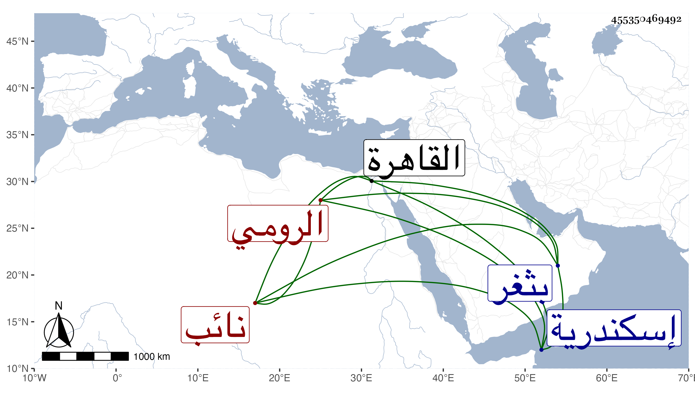

0902Sakhawi.DawLamic.ITO20230111-ara1.EIS1600.455350469492
Biography ID: 455350469492
599
فيروز الرومي العرامي نسبة للغرس خليل بن عرام نائب إسكندرية عمر دهرا طويلا وأنشأ برجا بثغر رشيد ووقف عليه وقفا ، وكانت له مشاركة في الجملة ويحفظ بعض تاريخ بل عمل كتابا في الأتابكي يشبك الشعباني وما وقع له مع الناصر زعم أنه نظم وليس بكلام منتظم فضلا عن النظم . مات بالقاهرة في حدود الخمسين .
